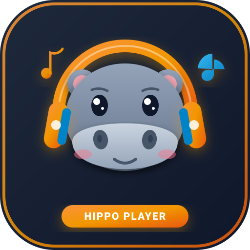

🦛 河馬隨身聽
Hippo Player · Go Magic! 全系列 CD 線上聽
1. 選擇教材冊別 (Book)
全冊 134 首
2. 課本標記雙格直連 (CD — 曲目)
手機大數字鍵盤
—
💡 課本標記「CD 1 Track 05」➔ 左格輸入 1，右格輸入 5，按下 Enter 立即聽

00:00
--:--
串流位址
3. 全片曲目速選 (CD 1)
共 88 首
⌨️ 鍵盤快捷鍵 (Desktop Shortcuts)
Space 播放/暫停
← → 快退/快進 5秒
↑ ↓ 音量 ±5%
[ ] 或 P N 上/下一首
L 單曲循環
M 靜音
R 從頭重播
Esc 離開輸入框